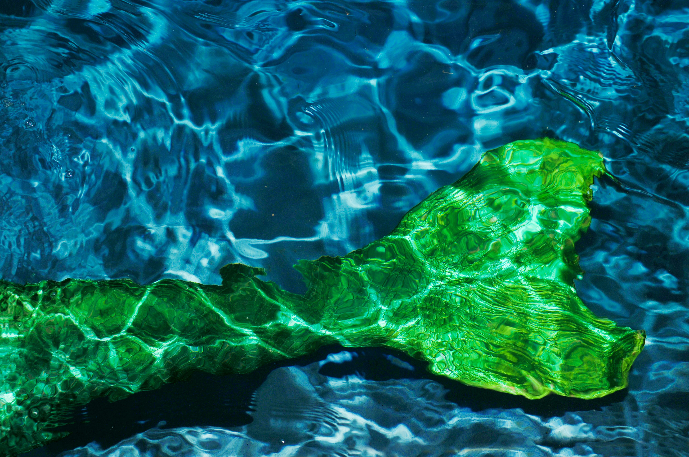

A mermaid is a mythical marine creature. Mermaids have the tail of a fish but the upper body of a human being. Although there are male mermen, mermaids in folklore and paintings were often portrayed as females. In European folklore, mermaids had magical and prophetic powers. Mermaids in European folklore also loved singing and dancing. Despite living long lives, mermaids were considered mortal, but had no souls. Mermaids in general have often been seen as having a conflicting personality - a beautiful, seductive woman, yet a sea creature that lured sailors to their deaths. However, legends about mermaids appear in several cultures across the world and have existed for thousands of years. This has led to kinder interpretations of mermaids, such as mermaids representing good fortune. For more information on the history of mermaids and various mermaid legends, visit Britannica and Royal Museums Greenwich.
Mermaids have captured the attention of humans for centuries. However, in modern times, it is generally believed that mermaids do not exist. Despite this, mermaids have remained popular in modern day art, media, toys, and costumes. In this way, the mermaid serves the same role as other mythical creatures, such as fairies, elves, unicorns, and vampires. They provide entertainment, interesting stories, fun designs, and let humans experiment with the fantastical. Stories such as "The Little Mermaid" have interested people since its creation, popularized by the Disney movie versions of the fairytale. Such movies allow people to experience and imagine worlds unlike their own, filled with magic and discovery. Most interesting of all, "mermaid businesses" have popped up in modern times, where people make a living by acting as mermaids. They perform in underwater shows, which people can watch to see a "real life mermaid". Netflix created a documentary series detailing the professional mermaid world, and how it works. For more information on this documentary series, visit Collider's article about the documentary. Overall, mermaids' roles in the modern world can be summed up as the following:
© 2024 Introduction to HTML - Rebecca JC